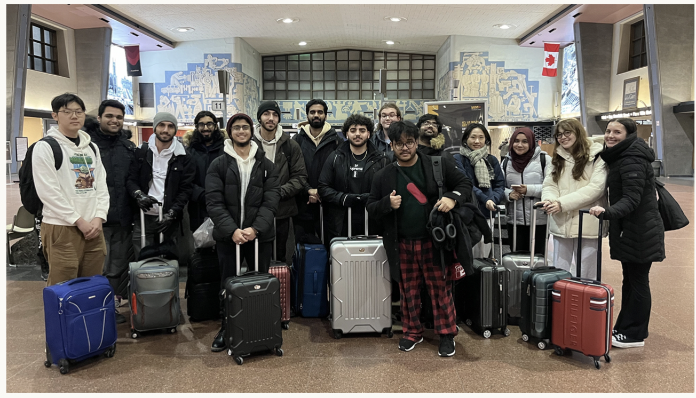

WINHACKS 2024: THE IN-PERSON EXPERIENCE
Feb 18th, 2024
The School of Computer Science successfully hosted the WINHACKS Competition on Sunday, February, 2024.
WinHacks was first created four years ago, but due to the global pandemic, it was hosted online. In 2024, the event was held in-person for the first time during reading week. Tech enthusiasts can work together, make new ideas, and find solutions to practical issues at hackathons. Future developers can use it as a means of networking with businesses and investigating potential career paths. Maintaining WinHacks' success in the coming years requires us to keep funding local talent in the computer industry.
CSS: FIRST-YEAR GAME NIGHT
Feb 15th, 2024
Game Night is a popular CS event held to bring together all gaming enthusiasts. On February 15th, CSS held its first-year game night, and it was a huge success! The turnout was fantastic, with attendees enjoying a lively atmosphere filled with laughter, friendly competition, and good vibes all around. From intense chess matches to casual games like mafia and cup pong, there was something for everyone to enjoy.
The java lounge was transformed with fun LED colors and fairy lights, turning the java lounge into a lively venue. However, what truly made the night special was the opportunity for attendees, especially first-year students, to connect with fellow CS peers. These events go beyond just having fun; they're also about building relationships and creating lasting memories with fellow first-year students! People were laughing over games, while others just hung out, chatting and making new friends. It was a fun evening for everyone!

THE CANADIAN UNDERGRADUATE SOFTWARE ENGINEERING CONFERENCE (CUSEC)
Jan 18th, 2024
The Canadian Undergraduate Software Engineering Conference (CUSEC) is an annual conference, held in Montreal, organized by students for students. During the conference, you have the opportunity to network with other students, attend panels, meet with sponsors, and explore Montreal.
Attending CUSEC provides you with knowledge and connections that can be incredibly invaluable in the software engineering industry. As well, it’s a good way to meet new people and socialize.